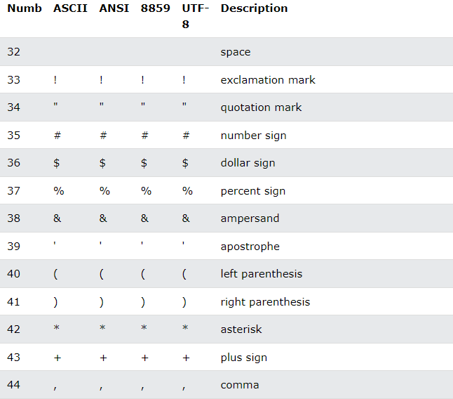
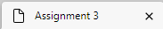
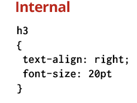
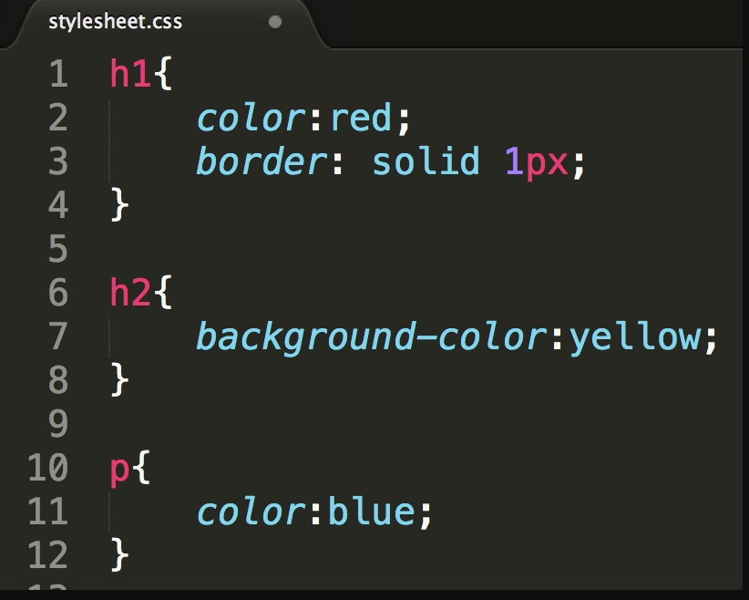

Click here to see other page.
| Tag | Definition | Examples |
|---|---|---|
| <DOCTYPE html> | Defines the document type | |
| <html lang="en"> | The lang attribute specifies the language of the element's content. | |
| <meta charset="UTF-8"> | Defines a thematic change in the content |  |
| <title> | Defines a title for the document |  |
| <style> | used to define a style for a single HTML page |  |
| <link rel="stylesheet" href="styles.css"> | a separate CSS file that can be accessed by creating a link within the head section of the webpage. |  |
| <link rel="icon" type="image/x-icon" href="/images/favicon.ico"> | a small icon associated with a particular website or page that is displayed in an Internet browser |